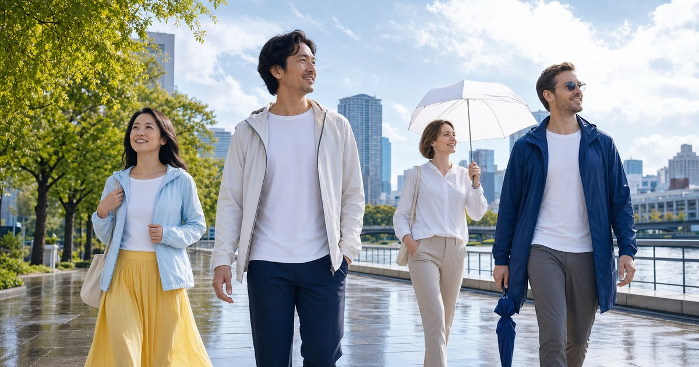

夏季戶外防曬穿搭：防曬外套、帽子、傘與雨具的實用搭配
夏天出門常同時遇到烈日、冷氣、午後雨與回程悶熱。這篇把防曬外套、帽子、晴雨傘、雨衣與雨鞋拆成不同任務，整理一套更能重複使用的夏季戶外穿搭。

防曬、降溫、防雨不是同一件事
很多夏季穿搭會把防曬外套、帽子、傘和雨衣全部歸在「遮」這件事上，但它們處理的問題其實不同。防曬外套解決的是長時間曝曬與冷氣落差；帽子處理臉部、頭頂和視線；晴雨傘處理短距離移動；雨衣和雨鞋則是雨勢變大時的穩定方案。
如果把所有功能壓在同一件單品上，很容易買到看似全能、實際每項都普通的東西。UV100 適合處理高頻穿著，FULTON、左都雨傘適合處理傘具，OMBRA 更適合把雨衣、雨鞋與雨天備案補起來。
- 長時間曝曬：先看防曬外套與帽子。
- 短距離步行：晴雨傘比雨衣更容易進出室內。
- 騎車或大雨：雨衣、雨鞋與包袋防水要一起考慮。
防曬外套先看穿著頻率，不先看顏色
防曬外套最常見的錯誤，是買了很有戶外感但不想每天穿。若你的日常是辦公室、捷運、咖啡廳與戶外短路程混合，外套就不能只像登山裝；它需要能和襯衫、棉 Tee、洋裝或寬褲搭配，也要能塞進包裡。
挑選時可以先看三個細節：布料是否容易悶、帽沿或領口能不能遮到需要的地方、袖口是否影響拿手機和背包。真正使用率高的防曬外套，通常不是最誇張的款式，而是你早上出門會自然拿起來的那件。
- 通勤使用：優先選輕、好收、顏色能搭日常衣櫥的款式。
- 戶外使用：加看帽型、袖口、拉鍊、口袋與背包摩擦處。
帽子和傘處理臉部與短距離移動
帽子和傘常被拿來互相取代，但它們適合不同移動節奏。帽子適合雙手要拿咖啡、牽小孩、拍照或拖行李的時候；傘適合從停車場到餐廳、捷運站到辦公室這類短路程。
FULTON 的晴雨傘適合想把通勤傘做得更有質感的人，左都雨傘則可作為日常替換與不同尺寸的補充。選傘時不必只追求最小，因為太小的傘常遮不到包和肩線；也不必每次都選最大，因為進出室內會變得麻煩。
- 常走路：傘面要能遮住肩線與包。
- 常進出室內：收合速度、濕傘收納與重量更重要。
雨衣雨鞋是備案，不該每天都像臨時方案
午後雷陣雨最讓人狼狽的地方，是你可能原本穿得很完整，卻在 10 分鐘內變成全身濕。雨具如果只是塞在車廂或包底的臨時塑膠袋，通常拿出來時不是太皺、太悶，就是根本不想穿。
雨衣要看穿脫速度、袖口、帽緣、包包覆蓋與下擺長度；雨鞋要看是否磨腳、能不能搭日常褲型、雨停後會不會突兀。若你只是步行通勤，不一定需要全套雨衣；但若你騎車或常在大雨中移動，雨衣和鞋子的穩定性就比傘更重要。
- 步行通勤：晴雨傘加防潑水鞋面通常比全套雨衣更方便。
- 機車移動：雨衣長度、袖口密合與鞋面防水要一起看。
把冷氣房與傍晚溫差也放進穿搭
夏天的外套不只為了防曬，也常常是冷氣房裡的緩衝層。很多人白天在戶外覺得熱，進到辦公室、餐廳或高鐵車廂後又覺得冷，如果外套太厚或太像純戶外裝，就會變成拿在手上的負擔。
UV100 的防曬外套適合處理日常高頻穿著，Litume 的戶外服飾則更適合步道、旅行或較長時間戶外停留。你可以把兩者想成不同強度：一件負責城市日常，一件負責比較明確的戶外行程。
- 冷氣房多：外套觸感與搭配度要優先。
- 戶外時間長：帽型、領口與袖口包覆要更完整。
一套好用的夏季戶外公式
如果想建立一套不容易出錯的夏季戶外配置，可以用「一件可日常穿的防曬外套、一頂不壓髮太嚴重的帽子、一把順手晴雨傘、一組雨天備案」作為基本盤。這四件事不必同時都買最高規格，但每件都要有明確任務。
預算安排上，建議先投資每天穿得到的防曬外套，再處理傘具，最後補雨衣和雨鞋。因為防曬外套使用頻率最高，傘具最容易遺失或替換，雨衣雨鞋則視你的交通方式決定升級幅度。
- 日常包裡放：薄防曬外套、折傘、小型防水袋。
- 旅行行李放：可壓縮外套、抗風傘、輕量雨具。
把城市日常和戶外行程分成兩套強度
如果主要是城市通勤、買咖啡、接送或逛街，防曬外套要能融入日常衣櫥，不能每次穿起來都像準備上山。UV100 的價值在於品項明確，適合先找可日常穿的外層，再依照帽型、袖口和收納體積做取捨。
如果是步道、海邊、露營或整天在戶外，Litume 這類戶外服飾可以補上更偏機能的選項。這時候就要多看口袋、拉鍊、背包摩擦處和風雨變化，而不只是看衣服是否顯瘦或顏色好搭。
- 城市日常：搭配度、重量、冷氣房舒適度優先。
- 戶外行程：帽型、袖口、口袋和收納體積優先。
傘具不要只追求小，還要看路線
很多人買傘只看能不能塞進包，但夏天的傘要面對太陽、午後雨和風。FULTON 適合想把通勤傘做得更穩、更有質感的人；左都雨傘則適合補足不同尺寸或日常備用傘。選傘時要把肩線、包包和常走路線一起放進來。
如果你的路線常進出捷運、辦公室和餐廳，收合速度與濕傘收納比傘面大小更重要；如果常走開闊路段或停車場，傘骨穩定和傘面覆蓋就要優先。傘不是越小越好，而是要剛好適合你每天會走的那段路。
- 短距離移動看收合，長距離步行看遮蔽。
- 包包常濕的人，應優先確認傘面是否遮得到肩線。
雨具備案要固定位置，才會真的被使用
OMBRA 這類雨具適合處理雨衣、雨鞋與防水備案，但最重要的是位置固定。很多雨具不是不好用，而是每次下雨時都找不到；放在包底太深、車廂太亂或辦公室沒有備份，都會讓它變成心理安慰而不是實際工具。
建議把雨具分成隨身、車廂或辦公室三層。隨身放折傘與小防水袋，車廂放雨衣或鞋套，辦公室放備用襪或小毛巾。這樣雨天不是靠運氣，而是有一套可以重複執行的配置。
- 隨身：折傘、小防水袋。
- 固定點：雨衣、鞋套、擦拭巾與備用襪。
FAQ
防曬外套和晴雨傘一定都要買嗎？
不一定，但兩者處理的問題不同。防曬外套適合長時間穿著與冷氣溫差，晴雨傘適合短距離步行與臨時遮蔽。如果你每天都在戶外移動，兩者搭配會比只靠其中一件穩定。
夏天雨衣怎麼選才不會太悶？
先看穿脫速度、版型空間和使用時間。如果只是短距離步行，輕量雨衣即可；若是機車通勤或長時間大雨，則要重視袖口、帽緣、下擺與包覆範圍。實際透氣與防水規格仍以商品頁為準。
傘具要選小折傘還是抗風傘？
若你重視包內收納，小折傘比較適合；若路線常有風、雨勢大或要遮住包包，抗風與傘面穩定度更重要。最好依主要通勤路線選，而不是只看重量或花色。 實際選購仍要回到你的交通方式、使用頻率、收納位置與商品頁規格，不建議只看單一品牌或單一功能。
下一步建議
如果你正在整理夏季戶外穿搭，先把防曬外套、晴雨傘與雨具分成三個任務來買，日常使用率會高很多。
重要警語
本文為一般選購與生活情境整理，不構成醫療、專業戶外訓練或安全保證。戶外活動請依天候、路線、個人體能與現場規範評估；涉及護具、防曬或雨具等用品，實際規格、價格、活動與庫存請以商品頁公告為準。
本文含品牌／商品導購連結；若你透過部分商品連結前往選購，Elite Fashion 可能取得合作收益。本文仍以編輯判斷與使用情境整理為主，價格、規格、活動與庫存請以商品頁公告為準。